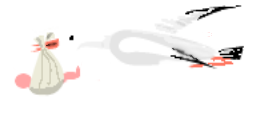

Bedienung - Abenteurer generieren
Generierung von Abenteurern

Es existieren mehrere Möglichkeiten, mit MAGUS einen Abenteurer oder auch eine Nichtspielerfigur zu generieren.
Einen Abenteuer
mit Wizard
generieren
Einen Abenteurer
Schritt für Schritt
erschaffen
Einen (bereits existierenden) Abenteurer
von Hand
eingeben
Einen Abenteurer mit
Zufallsgenerator
erschaffen
Zum Seitenanfang